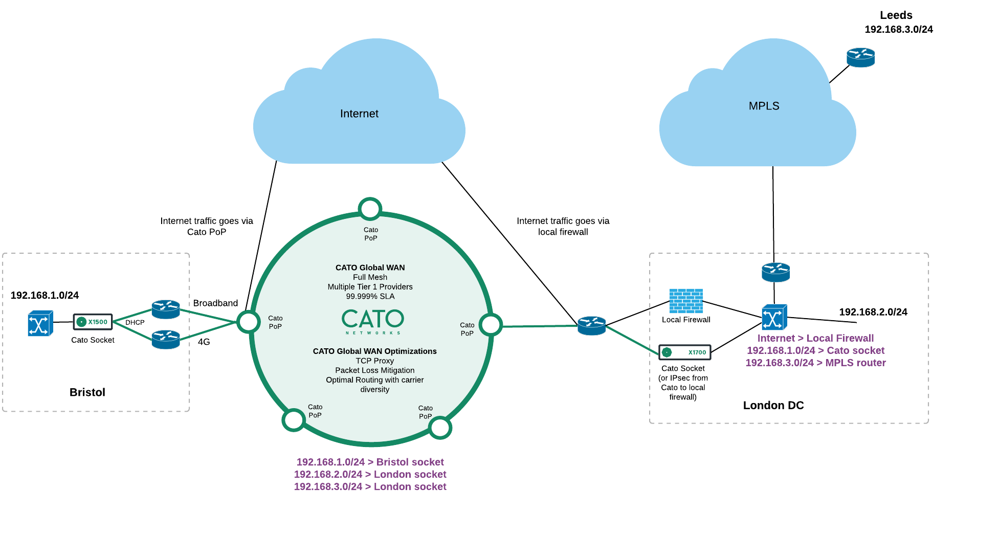
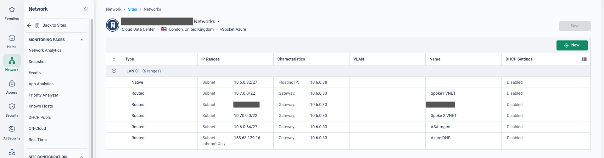
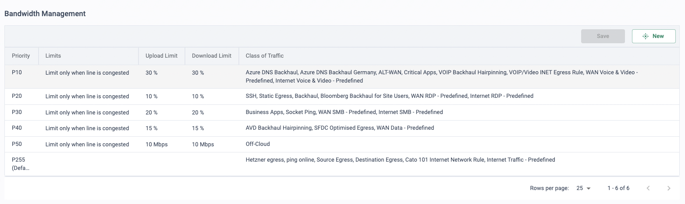

Why this matters
Most organisations that buy Cato are not building a WAN from scratch — they are leaving one. MPLS contracts stagger across regions, some sites have circuits with years left to run, and the applications in the datacentre must stay reachable from every site on every day of the migration. The deck behind this page states the objectives plainly:
- Co-existence during migration — Cato and MPLS run side by side, for as long as needed.
- From MPLS to an elegant future network design — migrate to the target architecture, not a copy of the old one.
- The datacentre as the bridge — it joins both worlds with no application changes.
- Minimise service disruption — each site cuts over on its own schedule, with dual last miles from day one.
- New sites talk to current sites — full any-to-any reachability between migrated and legacy sites, throughout.
Why WAN migrations stall
The big-bang trap
Flag-day cutovers concentrate all the risk in one change window. One misrouted prefix and every site loses the datacentre — so the migration gets postponed, again.
Contract overlap
MPLS terms rarely end on the same date. Sites need to leave as their circuits expire — which means the interim network must work for months, not days.
The in-between network
The hard part isn't either end state — it's the middle: who routes between the new WAN and the old one, and who can prove it's working at any point in time?
“When your MPLS renewal lands, which sites could you move tomorrow — and which are stuck because other sites still need to reach them? Who owns the routing design for the in-between state, and how long do you have to run it?”
Where this sits in the Cato SASE platform
- The datacentre takes a Socket first and becomes the bridge between the Cato cloud and MPLS.
- The DC socket advertises the prefixes of sites still on MPLS, reached via the DC LAN and MPLS CE router.
- Each branch migrates on its own schedule with broadband and 4G last miles and is instantly on-net.
- Migrated sites reach un-migrated sites by transiting the DC; the legacy network is untouched until switch-off.
Co-existence by design
The pattern is simple and repeatable. The datacentre gets a socket first — it becomes the bridge between both networks. Its socket advertises not only the local DC prefix but also the prefixes of every site still on MPLS, reached via the DC LAN and the existing MPLS CE router. Each branch then migrates on its own schedule: drop in a socket with broadband and 4G last miles, and it is instantly on-net to the DC and — transiting the DC — to every site still on MPLS. Nothing about the legacy network changes until its circuit is switched off.
Co-existence by design
Any prefix behind any socket is routable — including MPLS-site prefixes reached via a static route at the DC socket. New and current sites talk throughout.
Site-by-site cutover
Sockets are zero-touch: ship, plug in broadband and 4G, and the site is on-net. Each site moves as its MPLS term expires — no synchronised change windows.
An elegant end state
You migrate to the target design — full-mesh any-to-any over the global backbone with optimisation built in — not a re-implementation of hub-and-spoke MPLS.
Minimal disruption
Dual last miles from day one, and internet egress can stay on the DC firewall until you're ready to move it — users notice nothing during the transition.
Who routes what during the transition
The original deck diagram below shows the full picture: Bristol already migrated (X1500, broadband + 4G, internet breakout at the Cato PoP), London DC bridging both networks (a socket — or IPsec from Cato to the local firewall — plus the firewall and MPLS router), and Leeds still on MPLS. The deck illustrates the DC socket as an X1700; in the demo tenant, London DC runs an X1500.

The two routing tables in that diagram are the whole trick — worth walking line by line in the room:
| Destination | Site | Cato routing table | London DC local routing |
|---|---|---|---|
| 192.168.1.0/24 | Bristol (migrated) | → Bristol socket | → Cato socket |
| 192.168.2.0/24 | London DC | → London socket | local LAN |
| 192.168.3.0/24 | Leeds (still on MPLS) | → London socket | → MPLS CE router |
| Internet | — | Bristol: breakout at Cato PoP | → local firewall |
As each MPLS site migrates, its prefix simply moves from “→ London socket” to its own socket in the Cato routing table, and the corresponding static route is deleted at the DC. When the last site moves, the MPLS router and the contract behind it are decommissioned.
How to run the demo
The “How to” slide in the original deck was blank, so this runbook was authored for the library from the co-existence topology above and the standard demo tenant. Review it against your tenant before first customer use.
-
Walk the co-existence topology
Open on the diagram above. Three sites, three states: Bristol already migrated, Leeds untouched on MPLS, London DC bridging both. Ask which of their sites map to each role — most prospects can name their “London DC” immediately.
-
Show how the DC socket advertises MPLS-site routes
Network → Sites
Open London DC and show its networks and static routes: the local DC range, plus the Leeds prefix (192.168.3.0/24) with a next hop of the MPLS CE router on the DC LAN. This is the entire integration — no BGP redesign, no changes on the MPLS side.
-
Show the routing table both networks share
Monitor → Topology
Show every site, its tunnels and its ranges in one view — migrated prefixes behind their own sockets, the Leeds prefix behind London DC. If you have Socket WebUI access, the socket's routing table tells the same story from the site's point of view.

Network → Routing Table (demo tenant): every site's ranges in one table, with next hop, routing type and origin PoP. This estate shows only directly connected ranges; during co-existence, search it for the Leeds prefix and it should list London DC as the site it sits behind. -
Simulate the cutover of one site
Network → Sites
Create a new socket site to play the part of Leeds on cutover day (use a spare lab socket, e.g. the HQ lab site's X1500, or just walk the site-creation flow): assign the 192.168.3.0/24 range to the new site, delete the static route at London DC, and the Cato routing table updates. That is the whole change window.
-
Prove new and current sites keep talking
Monitor → Topology
Generate traffic between a migrated site and the DC (file share, RDP, ping) and show the live tunnels and throughput. Then Monitor → App Analytics for the same flows attributed to sites and applications — the visibility they never had on MPLS.
-
Discuss internet egress during the transition
Security → Internet Firewall
Two valid interim patterns, per site: keep breaking out via the DC firewall (nothing changes for compliance or SIEM feeds), or break out directly at the Cato PoP with the full security stack — as Bristol does in the diagram. Show that this is a per-site policy choice, not an architectural fork.
-
Close on the end state
When the last site migrates: delete the static route, decommission the MPLS router, terminate the contract. What remains is the elegant target design — every site any-to-any on the global backbone, one policy, one console.
How to prove it in the customer's tenant
The MPLS-exit PoV proves exactly one thing: the co-existence pattern works on their network, with their applications, while the MPLS estate runs untouched. The scope is deliberately small — a socket at the datacentre and a socket at one pilot branch. Everything else stays exactly as it is, which is itself part of the proof: if the PoV needed changes to the legacy network, so would the migration. Frame the engagement with Running a Cato PoV — agree the success criteria below before configuring anything, book the weekly sync and the decision meeting up front, and file evidence the day it lands.
Success criteria
Four criteria, agreed at the scope workshop — each one a measurable statement with a named evidence artefact:
| # | Success criterion | Evidence artefact | Where it lives |
|---|---|---|---|
| 1 | Co-existence routing works — both directions. The DC socket advertises the MPLS-site prefixes into Cato, and the migrated pilot site reaches every un-migrated site via the DC bridge, for sessions initiated from either side. | Completed reachability matrix (template below) with dated Topology screenshots | Monitor → Topology |
| 2 | Application performance parity or better. The pilot site's agreed key applications perform at least as well over Cato as they did over MPLS — measured, not felt. | EM site score for the pilot site; before/after latency table per application | Home → Experience Monitoring |
| 3 | Voice quality maintained on broadband last miles. Test calls between the pilot site and an un-migrated site pass the customer's own quality bar, with packet loss mitigation demonstrably active on the voice rule. | Call-test log with user verdicts; screenshot of the voice network rule with packet loss mitigation enabled; last-mile loss statistics | Network → Network Rules · Home → Experience Monitoring |
| 4 | Rollback is a route withdrawal. The pilot site can be returned to MPLS by reversing the route changes alone — timed during the PoV, with no site visit and no change to the legacy network. | Timed rollback exercise write-up; Audit Trail entries for the route changes | Network → Sites · Administration → Audit Trail |
- Two socket sites licensed for the PoV: the DC socket and the pilot branch socket. No TLS inspection is required — this is a routing and performance PoV, not a content inspection one.
- An IP plan on the table: the pilot site's range, the DC range, and the prefix of every site staying on MPLS — checked for overlaps (including any remote-access pools and DC service VLANs) before anything is configured.
- The routing-decision choice made per Migration Methodology & Co-existence Patterns: static routed ranges at the DC socket, or a BGP handoff if the CE or DC L3 switch can peer.
- Carrier engaged early: the return route for the pilot prefix lives on the managed MPLS CE, so a change ticket — with the carrier's lead time — is on the critical path (see troubleshooting below).
- Broadband (and ideally 4G/LTE) last miles ordered and live at the pilot branch, and a change window agreed for its cutover day.
- The key-application list and the voice test plan written into criteria 2 and 3 — named apps, named test callers, an agreed quality bar.
Configuration walkthrough
-
Baseline MPLS before touching anything
Capture the “before” for criterion 2 while the pilot site is still on MPLS: latency, jitter and loss from the pilot site to each agreed key application (and a timed voice call to another site), from the customer's own tooling or simple repeated tests. Without this table, “parity or better” has nothing to be better than.
-
Connect the DC socket
Network → Sites
Create the DC site with its LAN range as the native range and bring the socket up on the DC LAN, alongside the existing firewall and the MPLS CE router. Nothing routes through it yet — connecting the DC socket changes nothing for any user, which is worth saying out loud in the weekly sync.
-
Advertise the MPLS estate as routed ranges
Network → Sites
In the DC site's Site Configuration → Networks, expand the LAN interface and add one Routed range per site staying on MPLS, with the Gateway set to the MPLS CE's LAN IP — the next hop for the neighbouring router (Configuring Network Ranges for a Site). This is the entire Cato side of the bridge:
# London DC site — Site Configuration → Networks → LAN → New (Type: Routed) Routed range 192.168.3.0/24 Gateway 192.168.2.254 # Leeds — next hop = MPLS CE on the DC LAN # …one line per site still on MPLS; delete each one as its site migrates # MPLS CE router (carrier-managed) — return route for the migrated pilot prefix ip route 192.168.1.0 255.255.255.0 192.168.2.1 # next hop = DC socket LAN IP # must be redistributed into the carrier VPN so remote CEs learn it — raise the ticket early
-
Or let BGP do the advertising
Network → Sites
If the MPLS CE or a DC L3 switch can peer, configure an eBGP neighbour on the DC socket instead of static ranges (Using BGP in the Cato Cloud — Cato's default ASN is 64515). Accepted routes propagate to the whole account automatically, and withdrawal is automatic too. To keep learned legacy routes local to the DC site rather than account-wide, tag them with the reserved community <Cato ASN>:32768 — socket v15 or later (Cato Reserved BGP Communities). The trade-off table is on the methodology page; for a single-DC PoV, static routed ranges are usually the simpler, lower-risk choice.
-
Cut the pilot branch over
Network → Sites
Create the pilot site with its range as the native range, connect the socket on broadband plus 4G/LTE, and — in the agreed window — move the branch LAN behind it. The pilot prefix now lives behind its own socket in the Cato routing table; the carrier's return route (previous step) carries traffic from un-migrated sites back via the DC. The un-migrated estate is not touched.

Site Configuration → Networks — the routed-range mechanics in the flesh. This data-centre site (name redacted) declares its native range 10.6.0.32/27 plus five Routed ranges, every one pointing at Gateway 10.6.0.33 — a next-hop on the site LAN; here that next-hop reaches Azure spoke VNETs, but the mechanism is identical for co-existence. Point at any Routed row and substitute the MPLS CE's LAN IP as the gateway: Cato delivers traffic for the legacy prefixes to the DC site, the site hands it to the CE, and no BGP is required. -
Protect voice with priority and packet loss mitigation
Network → Bandwidth Management Network → Network Rules
Assign the voice application to the top bandwidth priority profile (e.g. P10 — profiles carry a priority value and optional upload/download limits; Configuring Bandwidth Management Profiles), then enable packet loss mitigation on that voice network rule. On active/active last miles Cato duplicates the packets across both DTLS tunnels; on active/passive, UDP traffic is duplicated with a small delay (Packet Loss Mitigation for Multi-Tunnel Links). Scope it to the voice rule only — duplication costs bandwidth.
![CMA Network → Network Rules with a New Rule panel open over the rulebase: the Configuration section shows Bandwidth Management with a mandatory Bandwidth Priority dropdown reading P255 above a hint that lower numbers mean higher priority in the range 2 to 254, ticked checkboxes for Active TCP Acceleration and Packet Loss Mitigation, and a Primary Transport of Cato with Automatic interface role. A footnote states changes will be saved to an unpublished revision, above Create new revision and Cancel buttons.](../assets/img/cma-voice-rule-editor.png)
Network Rules → New Rule — the two controls that protect voice, shown mid-build. Point at Bandwidth Management: Packet Loss Mitigation is ticked (alongside Active TCP Acceleration), and the mandatory Bandwidth Priority dropdown — still on its P255 default here — is where the voice rule gets its top profile, P10 in this playbook, with the transport pinned to Cato. The panel's own footnote keeps the demo honest: changes only land in an unpublished revision, and this rule was cancelled rather than created — nothing was saved. -
Prove it, both directions, and file the evidence
Monitor → Topology Home → Experience Monitoring
Work the reachability matrix below: generate real flows initiated at the pilot site and initiated at an un-migrated site, and tick each row with a dated screenshot. Then let Experience Monitoring accumulate: the pilot site's score, per-application TTFB and last-mile statistics are the ongoing evidence for criteria 2 and 3 (Using the Experience Monitoring Page). Walk the matrix and the score at every weekly sync.
What good output looks like
The routing evidence for criterion 1 is a filled-in matrix — every row proven by a real session and a dated screenshot, not by an architecture slide:
| Flow | Initiated from | Path taken | Proven |
|---|---|---|---|
| Pilot branch → DC applications | Pilot branch | Cato backbone → DC socket | ☐ date / evidence ref |
| DC → pilot branch (management, backup) | DC | DC socket → Cato backbone | ☐ date / evidence ref |
| Pilot branch → un-migrated site | Pilot branch | Cato → DC socket → MPLS CE → MPLS | ☐ date / evidence ref |
| Un-migrated site → pilot branch | Un-migrated site | MPLS → MPLS CE → DC socket → Cato | ☐ date / evidence ref |
| Voice call, pilot ↔ un-migrated site | Both ends | Full bridge path, both directions | ☐ date / quality verdict |
| Pilot branch → internet | Pilot branch | Breakout at the Cato PoP (or via DC firewall — per the agreed interim pattern) | ☐ date / evidence ref |


Troubleshooting — what actually goes wrong
Asymmetric routing — the classic
Pings work but TCP sessions from the MPLS side stall: the forward path enters the DC via the socket while the return leaves via the DC firewall (or vice versa), and a stateful device sees half the conversation. Check: traceroute the pilot ↔ legacy flow from both ends and compare paths. Fix: keep the socket and the MPLS CE on the same L3 segment and make sure the CE's return route for the pilot prefix points at the socket — not through the firewall.
Overlapping ranges
A routed range that overlaps a DC service VLAN, a remote-access pool or another site's prefix sends traffic to the wrong place — or nowhere. Check: Monitor → Topology for the full range list before adding each routed range. Fix: resolve the overlap in the IP plan; at scale, use the dummy-range pre-staging pattern (CGN space) from the methodology page.
MTU on the last mile
Broadband and PPPoE last miles often sit below 1500 bytes, and DTLS overhead reduces the effective tunnel MTU to 1383 — so pings and small requests work while large transfers and TLS handshakes hang. Check: test with large don't-fragment packets across the tunnel. Fix: set the per-WAN-link MTU in the Socket WebUI — the socket reconnects to apply it, so use a window (Socket MTU and DTLS Tunnels). Note PMTUD probes can register as apparent loss on quiet passive links — check before blaming the carrier.
CE static routes belong to the carrier
The return route for the pilot prefix lives on a carrier-managed CE — which means a change ticket, redistribution into the MPLS VPN, and a lead time measured in days or weeks, not hours. Check: before cutover day, confirm from an un-migrated site that its CE has learned a route for the pilot prefix towards the DC. Fix: raise the ticket at PoV kick-off, and make the carrier's confirmation a named prerequisite for the pilot cutover window.
Gotchas & exit
- Hairpin latency is real. Pilot ↔ un-migrated flows transit the DC during co-existence — a longer path than MPLS's direct mesh for pure site-to-site traffic. Most traffic goes to the DC anyway, but measure pilot ↔ DC and pilot ↔ legacy site as separate rows in criterion 2 so this is understood, not discovered.
- Packet loss mitigation costs bandwidth. Duplication doubles the voice stream across links, and on active/passive deployments only UDP is duplicated. Scope it to the voice rule — applied broadly it can throttle throughput towards the slower link.
- Bandwidth profiles shape site traffic. QoS priorities apply to socket-site traffic, not to remote Cato Client users — set that expectation if remote users join the demo.
- EM scores need traffic and time. Connect the pilot early in week 1 — a site connected the day before the wrap-up has no score worth showing.
- Size the DC socket for transit. During co-existence it carries pilot ↔ legacy traffic on top of the DC's own — count that in before adding more pilot sites.
Exit is criterion 4 rehearsed for real. Because the legacy network was never modified, unwinding the PoV is a deletion exercise on the Cato side: remove the routed ranges (or BGP neighbour) from the DC site, remove the voice rule and any PoV bandwidth profile, revert the carrier's return-route ticket, and return the pilot branch to its MPLS CE — a route withdrawal, exactly as timed during the PoV. And if the verdict is yes, nothing is thrown away: the DC socket is phase 1 of the migration — the animated phased journey shows the same bridge carrying the estate, site by site, to the end state.